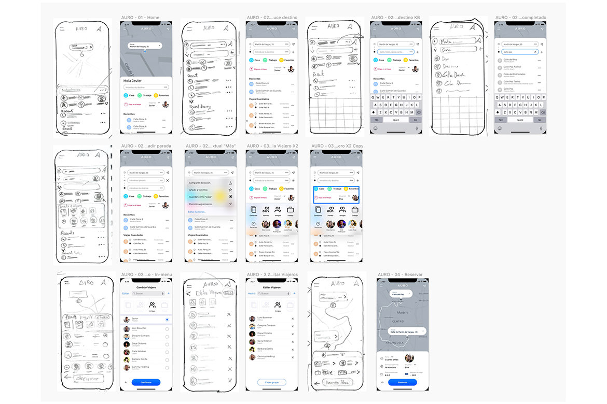
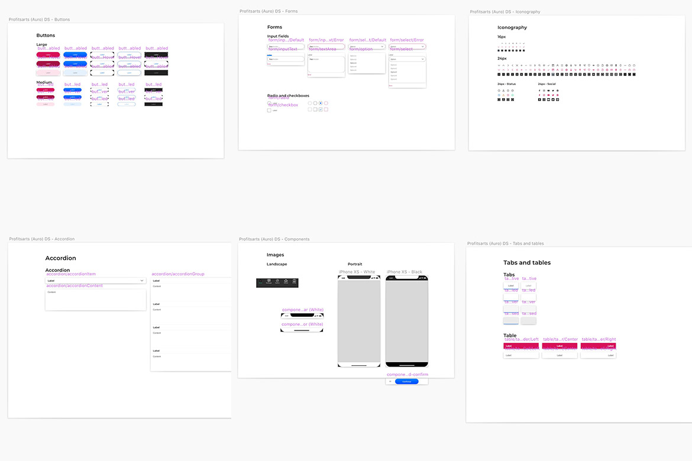

<div class="row">
    <div class="span12">
      <br>
      <h5>The third man</h5>

      <p class="work-def">Auro asked me for a way to be able to hire a taxi in the name of a third party, as at the time, it was only possible to order a taxi under the name of the user who owned the mobile phone assigned to the app.
After several exercises, tests and surveys, I came to the conclusion that the best way was to generate a pop-up that would allow to choose to make a quick change of user from an avatar icon that, when pressed, would access a shortcut, similar to sharing, where you could access both the agenda and a contact manager by groups: family, friends and work, being these completely renameable and configurable even in number.</p>
      <br>
      <p class="work-def sep">Pen and paper initial wireframes</p>
      

      <p class="work-def sep">Comparison of wireframes and final screens</p>
      <div class="sep"></div>

      <p class="work-def sep">Main screen, search and recent and saved searches screens.</p>
      <div class="sep"></div>

      <p class="work-def sep">Destination, stops and More button screens.</p>
      <div class="sep"></div>

      <p class="work-def sep">Change and passenger grouping screens.</p>
      <div class="sep"></div>

      <p class="work-def sep">Traveller edit screen and trip detail screen with extended trip information.</p>
      <div class="sep"></div>

      <p class="work-def sep">This is the design system that I usually use in Sketch and that I am improving with each project that I add, making it more versatile and functional with each iteration.
</p>
      <div class="sep"></div>

      <p class="work-def sep">More of the Design system</p>
      <div class="sep"></div>
    </div>
</div>
